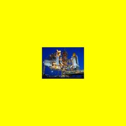
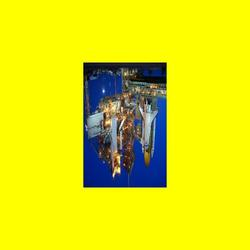
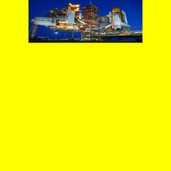
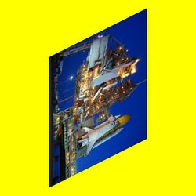
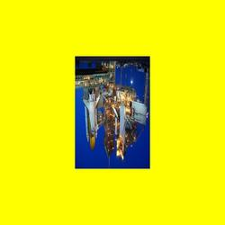
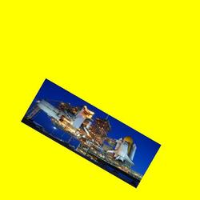
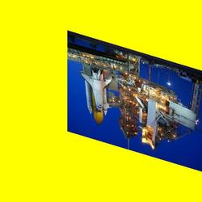
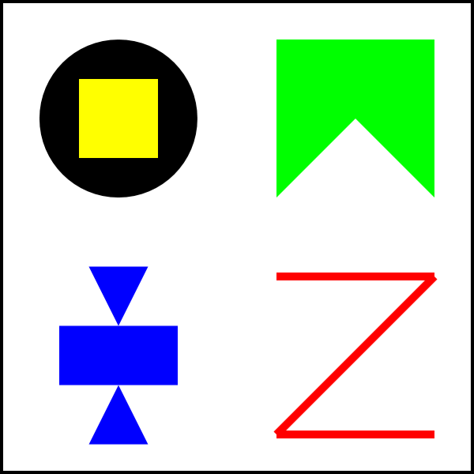

CS 424: Computer Graphics, Fall 2021
Lab 1: 2D Transforms
This lab consists of two exercises on using 2D transforms. The first exercise asks you to apply a variety of transforms to produce specific effects on an image. The second exercise asks you to draw a picture by applying transforms to some basic shapes.
You can do the lab using any one of three graphics APIs: Java Swing, JavaFX, or HTML Canvas. You will need the three files from one of the following folders:
- For Java Swing: lab1-files-swing
- For JavaFX: lab1-files-fx
- For HTML Canvas: lab1-files-html
You can also find copies of these folders in /classes/cs424 on our Linux computers.
For this lab, you do not need to add any comments to your code.
Transforms
In this lab, you will work with a graphics context object named g, and you will be applying transformations to that graphics context. All three graphics APIs have similar methods for translation, scaling, and rotation:
- g.translate(dx,dy)
- g.scale(sx,sy)
- g.rotate(angle
One difference is that for JavaFX, the angle of rotation is measured in degrees, while Java Swing and HTML Canvas graphics use radians. When using radians, for example, Math.PI is 180 degrees, Math.PI/2 is 90 degrees, Math.PI/4 is 45 degrees, and Math.PI/6 is 30 degrees.
The Java Swing API also includes a shear transformation, g.shear(h,v), where h is the amount of horizontal shear and v is the amount of vertical shear. Usually, either v is 0, for pure horizontal shear, or h is 0, for pure vertical shear. The JavaFX and HTML Canvas APIs do not have a shear subroutine, but you cn get the same effect by applying the general transform g.transform(1,v,h,1,0,0).
In the JavaFX and HTML Canvas APIs, there are methods g.save() and g.restore() for pushing and popping the current transform. (These methods actually push and pop other things as well, including the current drawing color.) The Java Swing API does not have similar methods, so in the file TransformedShapes.java, I have defined methods pushTransform() and popTransform() for saving the current transform on a stack and restoring the current transform from the stack.
Remember that the positive direction of the y-axis points downward in the default coordinate system for all three APIs!
Exercise 1: Applying Transforms
For the first exercise, the program that you will work on is Transforms2D.java, Transforms2D_FX.java, or Transforms2D.html, depending on which graphics API you have chosen.
The program draws an image, shuttle.jpg, in a display panel. The panel is 600-by-600 pixels, and the image is 400-by-300. The drawing is done in a draw() method near the beginning of the file. The method already applies the 2D transformation g.translate(300,300), which effectively moves (0,0) to the middle of the panel, so that the coordinate system on the panel extends from -300 on the left to 300 on the right and from -300 at the top to 300 at the bottom. The image is drawn with its top-left corner at (-200,-150), which puts the center of the image at (0,0).
{kind=link}
The window also contains a pop-up menu. The options in the menu are "None" and the numbers 1 through 9. In the program as given, the pop-up menu has no effect. Your job is to apply different transforms to the image, depending on the setting of the pop-up menu. You can do this by adding code to the draw() method. (The location where you have to work is marked with a TODO.) You don't have to do anything outside of this method. The method already has a variable, whichSelection, which contains a value from 0 to 9 giving the index of the selected item in the pop-up menu. When whichSelection is 0, the page should display the untransformed image. For the other possible values, you have to apply some transforms. You will need a different transform — and in some cases, a combination of transforms — for each of the values 1 through 9.
Here are the nine images that you should display for the nine settings of the pop-up menu from 1 to 9. The images in your program should be exactly the same as these:
| 1.  |
2. |
3.  |
4. |
5.  |
6.  |
7.  |
8.  |
9.  |
Exercise 2: Drawing With Transforms
For the second exercise of the lab, the program that you will work on is one of TransformedShapes.java, TransformedShapes_FX.java, or TransformedShapes.html, depending on which graphics API you have chosen to work with. The place in the file where you have to work is the draw() method; it is marked with a TODO.
For this exercise, you should draw the following picture by applying transformations to just three basic shapes:

This program defines three methods that draw basic shapes: circle(), square(), and triangle(). For example, square() draws a 100-by-100 square centered at the point (0,0). Of course, the drawing is subject to any transforms that have been applied to the drawing context, so that the position, scale, and orientation of the figure that appears on the screen can be changed by those transforms. The picture that you draw must be made up entirely of transformed versions of the three basic shapes produced by calling circle(), square(), and triangle(). You can use change the color, but do not use any drawing commands such as g.fillRect().
The full picture is made up of four smaller pictures. Work on each smaller picture separately. It is easiest to build each quarter of the image with a center at (0,0), and at whatever size seems natural. Then scale the picture and translate it to the position where you want it in the final image. Remember that transforms are specified before the drawing to which they apply. For example, if you want to double the size of a drawing and move its center to (150,150), then you would say
g.translate(150,150); g.scale(2,2);
before the code that does the drawing. As an example, the program already contains code for drawing an "X" shape in the lower right corner of the drawing area. It also shows one copy of each of the three basic shapes. You should read the code and run the program to see what it does. The code in draw() should be removed and replaced by your own code to draw the assigned picture.
The drawing area for this program is 600-by-600 pixels. It uses the default pixel coordinate system, with (0,0) at the top left corner.
This program will take a lot less time if you think before you code!
Turning in Your Work
Your program must be submitted by the beginning of the lab period next Thursday. Your work must be a submitted in a folder named "lab1" or "lab1-files-swing" or something similar. The folder must include the two programs that you worked on and a copy of the image file shuttle.jpg.
The directory /classes/cs424/homework on our Linux computers includes a subdirctory named after you. You should submit homework assignments into that directory. If you are working on one of the Linux computers in our labs, you can simply copy your work from your home directory into your homework folder. If you have your work on another computer, you can copy it directly to your homework folder using sftp or scp to math.hws.edu. If you don't know about sftp and scp, please ask about how to use them.
Maybe you can get a little extra credit by doing two or three APIs. Once you have one API done, the other two are mostly just copy-and-paste, with a little editing to account for the differences among the APIs.